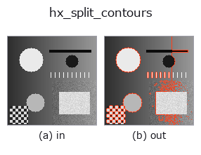

halcon_ext op• 数据种类:contour → contour
• 调用:fullseye.apply(img, "hx_split_contours", a=0.5, b=0.5)(2-D 的模型是一张图 + 两个标量旋钮 a,b∈[0,1])
• HALCON 对应:split_contours_xld(其含义与参数可参考 HALCON 手册)

*图为在 128×128 合成输入上实际运行的输出。左为输入，右为输出。点云以俯视散点显示(亮度 = z)，一维序列为折线，体数据为沿 z 的最大值投影，视频为中间帧，复数图像为幅值；无法成像的返回值直接显示数值。*
扫描旋钮 a(0.1 / 0.5 / 0.9，另一旋钮取默认):
▸ hx_split_contours: knob a sweep (docs site)
*旋钮 b 不改变输出(实测: 0.1 / 0.5 / 0.9 相同)。*
阶段(前置算子 → 本算子，从左到右):
▸ hx_split_contours: stages (docs site)
换别的图像(合成场景 / 照片 / 硬币。上排为输入，下排为对应输出。旋钮取默认):
▸ hx_split_contours: other inputs (docs site)
在支配点处(RDP)把每条 contour 分割成线段(容差 eps 由 a)。
> 以下的详细说明为原文 —— 摘要与标题已翻译。
各 contour(点数 3 以上)に Ramer-Douglas-Peucker を掛けて支配点の index を求め、隣り合う支配点の間の部分列
`c[s:e+1]` を新しい contour として並べる(隣り合う線分は端点を共有する)。点数 2 以下の contour はそのまま通す。
• `a → 許容距離 eps = 0.5 + a*5`(0.5〜5.5 画素)。この距離以内の折れは無視されるので、大きいほど線分が
長く少なくなる。
• `b` は未使用。
出力は「線分ごとの contour」であって折れ線の頂点だけではない(元の点は全部残る)。閉じた contour(始点=終点)は
始点から最も遠い点で最初に分割される。線分の本数が角の数の目安になり、`hx_regress_contours` を後段に置くと
各線分の直線性が測れる。
• 示例数据目录(下载 URL / 许可证) —— 2-D 用 skimage.data(BSD/公有领域)加合成图,3-D 给出真实数据源(Stanford/PDS 等)的下载 URL。
• 算子来历与参考文献 —— 该算子族所依据的研究/方法出处。
• 算法的正典(作者・年份)与用途见上面的族使用指南。
下面的程序已确认可以运行(与图相同的输入)。在 Studio 帮助中，此块会变成按钮，可当场加载并运行。
threshold 0.50 0.50 sk_find_contours 0.50 0.50 hx_split_contours 0.50 0.50
▸ Load this pipeline · Load & run
• gallery2d_halcon_ext — py -3.11 examples/gallery2d_halcon_ext.py
contour 作为输入)identity · select_contours · smooth_contours · fit_line_contours · contours_to_region · count_contours · total_length · select_contours_xld
halcon_ext)hx_gen_circle · hx_gen_ellipse · hx_gen_rectangle2 · hx_gen_checker_region · hx_gen_grid_region · hx_gabor · hx_fit_surface1 · hx_fit_surface2
*Provenance: ops.py — 2D 算子登记表。本条目由 tools/opdocs.py md 自动生成(请勿手工编辑)。*
© 2026 Kazufumi Furuse — Fullseye operator documentation. Licensed under Apache-2.0.
{kind=link}
{kind=link}
{kind=link}